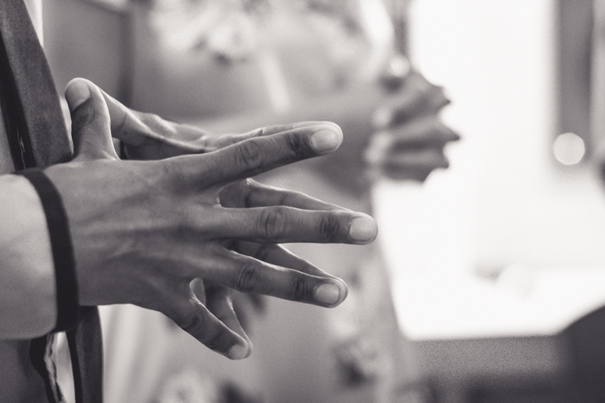

X-MENS Die Album
X-Mens is Hakkiesdraad Hartman se eerste amptelike ateljee album. The music was inspired by his life journey, his observation of the world and his opinions are expressed in very articulated verses supplemented with great featuring acts and awesome soundtracks as provided by the executive producer, Frazer Barry. The album features the Hip-Hop icon Grandmaster Ready D on two tracks 'Woestyn Blom" and "Die lewe is mooi'. The Tribal Echo drummer Deniel Barry makes a vocal appearance on the song 'Raak die pad byster' which makes for a stunning collaboration with Hakkiesdraad Hartman. She also lends her voice to "Free your people" and "Awoo!Big Bad Wolf", songs which also features the vocal dynamics of Miss Lenda, the stunning songstress from Worcester.
Die baie dinamiese Jerome Rex maak sy verskyning op "Give dem Life" asook op die liedjie "Long walk to freedom". "Long walk to freedom" also features Nama Xam, one of the pioneers of SA Hip-Hop. Jah Logo, the very versatile emcee from Paarl, drops a humungus verse on "Free your People" and puts the cherry on the cake in a track that addresses the ills within the music industry. The executive producer Frazer Barry lends his voice and verse to the tracks "Give Them Life", "Roer My!" and the title track "X-Mens". "X-MENS" also features voice cameo appearrances by renowned poet Diana Ferris, Hip-Hop activist and icon Emile YX?, Bamboesina vd See and Churchill Naude Even though Frazer created the full soundtrack for the album with his musical genius, beat contributors on the album are Earl "Naphs" Joubert, Robert " Rudeboi" Lawrence, Shannon "NinoDirtyFresh" Cleophas and Monich "Monark" Simon.
Hakkiesdraad Hartman has a quirky sense of humor and expresses his comedic flair on the album skits. Die Pasella aanbieder Rumarques "Oxijin" Gelderbloem verleen sy stem aan van die skits. Daar is 'n gebalanseerde balans van musiek genres op die album, providing a fresh listening X-perience with replay value because every song is filled with uniqueness.
Die X-Mens album tracklist:
- I. intro: disi komiek featuring oxijin
- II. give them life featuring jerome rex & frazer barry
- III. hou vir jou lekke
- IV. khora gom
- V. long walk to freedom featuring nama xam & jerome rex
- VI. pandora se boks
- VII. raak die pad byster featuring deniel barry
- VIII. big bad wolf featuring miss lenda
- IX. woestyn blom featuring zenobia kloppers, deniel barry, lynelle kenned & grandmaster ready d
- X-mens featuring nino dirty fresh & x-mens mense
- XI. die lewe is mooi featuring lynelle kenned, grandmaster ready d & breimasjien
- XII. roer my featuring frazer barry
- XIII. free yor people featuring miss lenda, deniel barry & jah logo
- XIV. die konfytrol featuring Frazer Barry
- XV. outro: tot weersiens